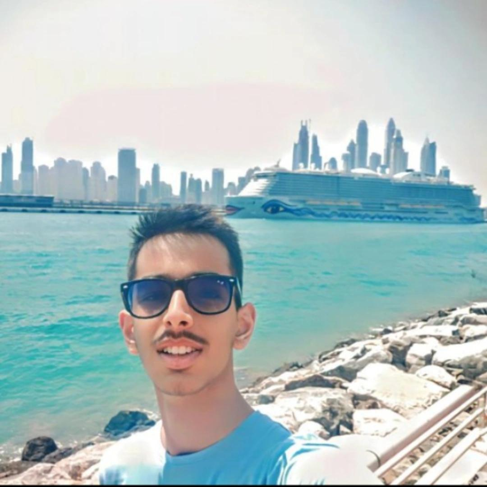

ABOUT ME
I’m Gaurav Garg, an ECE undergraduate at IIT Roorkee, originally from Chandigarh. I’m a curious learner who enjoys breaking down complex systems and understanding how things work, whether through code or circuits. I believe in continuous learning and improving by actively exploring new ideas and technologies.
My primary interest lies in software development and problem-solving, and I enjoy working across areas like web development, data structures and algorithms, competitive programming, AI/ML, and quantitative problem-solving. Alongside software, I also have a strong interest in ECE hardware and circuit design, which helps me develop a deeper, system-level perspective and work effectively at the intersection of hardware and software.
I’m a team-oriented individual who can adapt easily, contributing either as a leader or as a team member based on the requirements of the project. I value collaboration, clarity, and responsibility. Outside academics and tech, I enjoy football, chess, Formula 1, and music, which keep me motivated, competitive, and balanced.